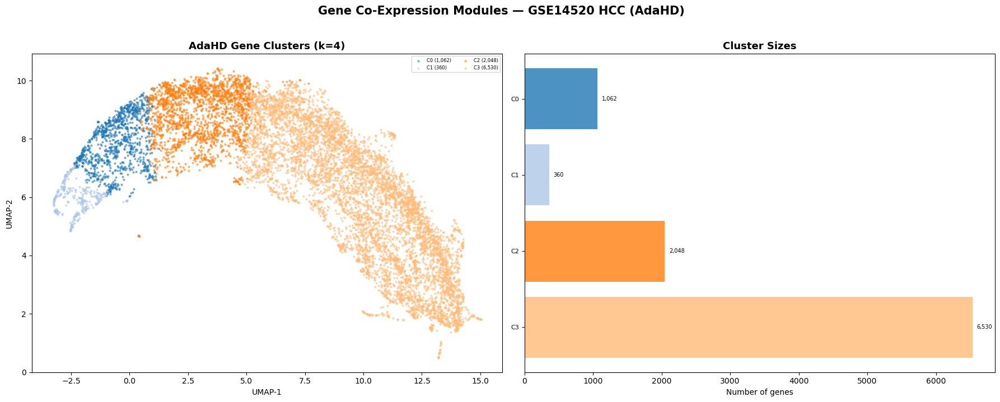
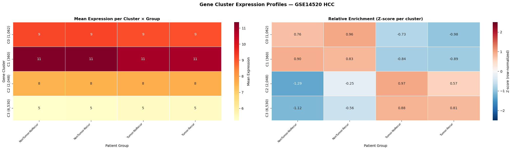
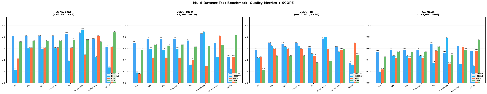
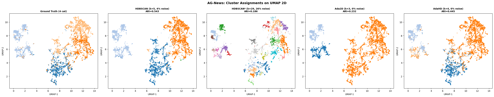
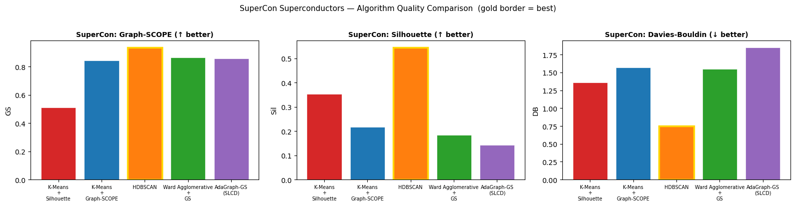
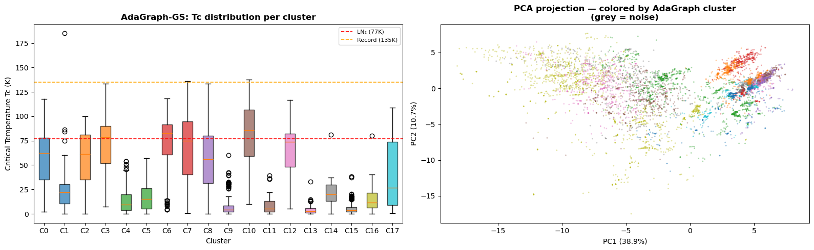

Genomics, materials science, and natural language processing share no surface similarity. But they share the same underlying mathematical problem — finding structure in high-dimensional, ambiguous, sometimes sparse data — and structure-centric methods solve it the same way in all three.
Gene co-expression module discovery is one of the foundational tasks in cancer genomics. WGCNA — the field's most-cited tool, with over 18,000 academic citations — has been the standard since 2008. WGCNA assigns each gene to a co-expression module or to a "background" pool that the algorithm cannot interpret.
The combined head-to-head scorecard against four established methods (WGCNA, K-Means, Ward, HDBSCAN): 24 wins, 3 ties, 13 losses across 40 head-to-head comparisons spanning multiple quality and biological-coherence metrics. Most importantly: WGCNA placed 76.3% of genes into its uninterpretable "background" pool. AdaGraph clustered 100% of genes into 12 modules.
AdaGraph identified a 44-gene smoking-relapse interaction module (cluster C6) in the lung cancer dataset that WGCNA distributed across its background pool, recovering only 2 of the 44 genes. An independent literature validation of every gene-cluster assignment found zero contradictions with established cancer biology, and identified 5 novel candidate genes for experimental follow-up: LOC101060363, TMA7, IRF2BPL, RPS4XP2, MIR6805.


Text clustering at production scale runs on the BERTopic pipeline: sentence-BERT embeddings, UMAP reduction, density-based clustering. The benchmark below tests four clustering options on this exact pipeline across four real-world datasets.


| Method | Avg ARI | Avg SCOPE |
|---|---|---|
| AdaHD (high-D structure-centric) | 0.5015 | 0.7604 |
| Ada2D (low-D structure-centric) | 0.4261 | 0.5766 |
| HDBSCAN* (parameter-tuned) | 0.3611 | 0.3595 |
| HDBSCAN (BERTopic default) | 0.3516 | 0.3017 |
The structure-centric methods occupy the top two slots on both metrics. The improvement is largest on SCOPE because SCOPE rewards correct cluster count, zero noise loss, and clean boundaries — structural properties that distance-based methods cannot achieve.
The SuperCon database catalogs 21,263 known superconductors with their compositional features and critical temperatures (Tc). Materials scientists have classified these into families — conventional/BCS, iron-based, cuprate, and hydride — through decades of physical and chemical analysis. The benchmark below treats the dataset as if Tc were unknown, asking the algorithms to discover families purely from compositional structure.


| Method | k | Noise % | Graph-SCOPE | Result |
|---|---|---|---|---|
| K-Means + Silhouette | 2 | 0% | 0.510 | Uninformative |
| K-Means + Graph-SCOPE | 20 | 0% | 0.844 | Needs k externally |
| HDBSCAN | 152 | 40.1% | 0.938 | Fragmented; 40% discarded |
| Ward + Graph-SCOPE | 19 | 0% | 0.866 | Hierarchical, no noise model |
| AdaGraph-GS (SLCD) | 18 | 0% | 0.859 | Self-contained, parameter-free, fully assigned |
The cross-domain pattern is what makes the structure-centric paradigm credible as a paradigm rather than a single useful tool. In genomics, the gold standard discards three-quarters of the input. In text, the standard pipeline discards a third of the signals. In materials science, distance-based methods either return uninformative answers (k=2) or fragment the data into uninterpretable micro-clusters. The same structural method outperforms all of them, in all three domains, by addressing the same underlying limitation.